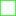
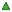

<!doctype html>
<html lang="en">
    <head>
        <meta charset="utf-8">
        <meta http-equiv="X-UA-Compatible" content="IE=edge">
        <meta name="viewport" content="initial-scale=1,user-scalable=no,maximum-scale=1,width=device-width">
        <meta name="mobile-web-app-capable" content="yes">
        <meta name="apple-mobile-web-app-capable" content="yes">
        <link rel="stylesheet" href="css/leaflet.css">
        <link rel="stylesheet" href="css/qgis2web.css"><link rel="stylesheet" href="css/fontawesome-all.min.css">
        <style>
        #map {
            width: 1357px;
            height: 837px;
        }
        </style>
        <title></title>
    </head>
    <body>
        <div id="map">
        </div>
        <script src="js/qgis2web_expressions.js"></script>
        <script src="js/leaflet.js"></script>
        <script src="js/leaflet-svg-shape-markers.min.js"></script>
        <script src="js/leaflet.rotatedMarker.js"></script>
        <script src="js/leaflet.pattern.js"></script>
        <script src="js/leaflet-hash.js"></script>
        <script src="js/Autolinker.min.js"></script>
        <script src="js/rbush.min.js"></script>
        <script src="js/labelgun.min.js"></script>
        <script src="js/labels.js"></script>
        <script src="data/hydrometeorological_stations_WGS84_1.js"></script>
        <script src="data/AOI_LIDAR_WGS84_2.js"></script>
        <script src="data/PerfumeRiver_catchment_geomer_WGS84_3.js"></script>
        <script src="data/suggestions_Netatmo_geomer_February2020_4.js"></script>
        <script src="data/LIDAR_available_WGS84_5.js"></script>
        <script src="data/suggestions_Netatmo_VN_March2020_6.js"></script>
        <script>
        var map = L.map('map', {
            zoomControl:true, maxZoom:28, minZoom:1
        }).fitBounds([[15.965559351833063,107.2066268375942],[16.582952368312572,108.25032960998048]]);
        var hash = new L.Hash(map);
        map.attributionControl.setPrefix('<a href="https://github.com/tomchadwin/qgis2web" target="_blank">qgis2web</a> &middot; <a href="https://leafletjs.com" title="A JS library for interactive maps">Leaflet</a> &middot; <a href="https://qgis.org">QGIS</a>');
        var bounds_group = new L.featureGroup([]);
        function setBounds() {
        }
        var layer_OSMStandard_0 = L.tileLayer('http://tile.openstreetmap.org/{z}/{x}/{y}.png', {
            opacity: 1.0,
            attribution: '<a href="https://www.openstreetmap.org/copyright">© OpenStreetMap contributors, CC-BY-SA</a>',
            minZoom: 1,
            maxZoom: 28,
            minNativeZoom: 0,
            maxNativeZoom: 19
        });
        layer_OSMStandard_0;
        map.addLayer(layer_OSMStandard_0);
        function pop_hydrometeorological_stations_WGS84_1(feature, layer) {
            var popupContent = '<table>\
                    <tr>\
                        <td colspan="2">' + (feature.properties['id'] !== null ? Autolinker.link(feature.properties['id'].toLocaleString(), {truncate: {length: 30, location: 'smart'}}) : '') + '</td>\
                    </tr>\
                    <tr>\
                        <td colspan="2">' + (feature.properties['class'] !== null ? Autolinker.link(feature.properties['class'].toLocaleString(), {truncate: {length: 30, location: 'smart'}}) : '') + '</td>\
                    </tr>\
                </table>';
            layer.bindPopup(popupContent, {maxHeight: 400});
        }

        function style_hydrometeorological_stations_WGS84_1_0(feature) {
            switch(String(feature.properties['class'])) {
                case 'hydrological':
                    return {
                pane: 'pane_hydrometeorological_stations_WGS84_1',
                shape: 'triangle',
                radius: 3.6,
                opacity: 1,
                color: 'rgba(61,128,53,1.0)',
                dashArray: '',
                lineCap: 'butt',
                lineJoin: 'miter',
                weight: 2.0,
                fill: true,
                fillOpacity: 1,
                fillColor: 'rgba(84,176,74,1.0)',
                interactive: true,
            }
                    break;
                case 'hydro-meteorology':
                    return {
                pane: 'pane_hydrometeorological_stations_WGS84_1',
                radius: 3.6,
                opacity: 1,
                color: 'rgba(179,93,142,1.0)',
                dashArray: '',
                lineCap: 'butt',
                lineJoin: 'miter',
                weight: 2.0,
                fill: true,
                fillOpacity: 1,
                fillColor: 'rgba(249,6,199,1.0)',
                interactive: true,
            }
                    break;
                case 'rainfall':
                    return {
                pane: 'pane_hydrometeorological_stations_WGS84_1',
                shape: 'square',
                radius: 3.6,
                opacity: 1,
                color: 'rgba(35,35,35,1.0)',
                dashArray: '',
                lineCap: 'butt',
                lineJoin: 'miter',
                weight: 1,
                fill: true,
                fillOpacity: 1,
                fillColor: 'rgba(2,112,252,1.0)',
                interactive: true,
            }
                    break;
            }
        }
        map.createPane('pane_hydrometeorological_stations_WGS84_1');
        map.getPane('pane_hydrometeorological_stations_WGS84_1').style.zIndex = 401;
        map.getPane('pane_hydrometeorological_stations_WGS84_1').style['mix-blend-mode'] = 'normal';
        var layer_hydrometeorological_stations_WGS84_1 = new L.geoJson(json_hydrometeorological_stations_WGS84_1, {
            attribution: '',
            interactive: true,
            dataVar: 'json_hydrometeorological_stations_WGS84_1',
            layerName: 'layer_hydrometeorological_stations_WGS84_1',
            pane: 'pane_hydrometeorological_stations_WGS84_1',
            onEachFeature: pop_hydrometeorological_stations_WGS84_1,
            pointToLayer: function (feature, latlng) {
                var context = {
                    feature: feature,
                    variables: {}
                };
                return L.shapeMarker(latlng, style_hydrometeorological_stations_WGS84_1_0(feature));
            },
        });
        bounds_group.addLayer(layer_hydrometeorological_stations_WGS84_1);
        map.addLayer(layer_hydrometeorological_stations_WGS84_1);
        function pop_AOI_LIDAR_WGS84_2(feature, layer) {
            var popupContent = '<table>\
                    <tr>\
                        <td colspan="2">' + (feature.properties['id'] !== null ? Autolinker.link(feature.properties['id'].toLocaleString(), {truncate: {length: 30, location: 'smart'}}) : '') + '</td>\
                    </tr>\
                </table>';
            layer.bindPopup(popupContent, {maxHeight: 400});
        }

        function style_AOI_LIDAR_WGS84_2_0() {
            return {
                pane: 'pane_AOI_LIDAR_WGS84_2',
                opacity: 1,
                color: 'rgba(5,255,1,1.0)',
                dashArray: '',
                lineCap: 'butt',
                lineJoin: 'miter',
                weight: 2.0, 
                fill: true,
                fillOpacity: 1,
                fillColor: 'rgba(182,109,194,0.0)',
                interactive: false,
            }
        }
        map.createPane('pane_AOI_LIDAR_WGS84_2');
        map.getPane('pane_AOI_LIDAR_WGS84_2').style.zIndex = 402;
        map.getPane('pane_AOI_LIDAR_WGS84_2').style['mix-blend-mode'] = 'normal';
        var layer_AOI_LIDAR_WGS84_2 = new L.geoJson(json_AOI_LIDAR_WGS84_2, {
            attribution: '',
            interactive: false,
            dataVar: 'json_AOI_LIDAR_WGS84_2',
            layerName: 'layer_AOI_LIDAR_WGS84_2',
            pane: 'pane_AOI_LIDAR_WGS84_2',
            onEachFeature: pop_AOI_LIDAR_WGS84_2,
            style: style_AOI_LIDAR_WGS84_2_0,
        });
        bounds_group.addLayer(layer_AOI_LIDAR_WGS84_2);
        map.addLayer(layer_AOI_LIDAR_WGS84_2);
        function pop_PerfumeRiver_catchment_geomer_WGS84_3(feature, layer) {
        }

        function style_PerfumeRiver_catchment_geomer_WGS84_3_0() {
            return {
                pane: 'pane_PerfumeRiver_catchment_geomer_WGS84_3',
                opacity: 1,
                color: 'rgba(255,0,0,1.0)',
                dashArray: '',
                lineCap: 'butt',
                lineJoin: 'miter',
                weight: 3.0, 
                fill: true,
                fillOpacity: 1,
                fillColor: 'rgba(93,159,190,0.0)',
                interactive: false,
            }
        }
        map.createPane('pane_PerfumeRiver_catchment_geomer_WGS84_3');
        map.getPane('pane_PerfumeRiver_catchment_geomer_WGS84_3').style.zIndex = 403;
        map.getPane('pane_PerfumeRiver_catchment_geomer_WGS84_3').style['mix-blend-mode'] = 'normal';
        var layer_PerfumeRiver_catchment_geomer_WGS84_3 = new L.geoJson(json_PerfumeRiver_catchment_geomer_WGS84_3, {
            attribution: '',
            interactive: false,
            dataVar: 'json_PerfumeRiver_catchment_geomer_WGS84_3',
            layerName: 'layer_PerfumeRiver_catchment_geomer_WGS84_3',
            pane: 'pane_PerfumeRiver_catchment_geomer_WGS84_3',
            onEachFeature: pop_PerfumeRiver_catchment_geomer_WGS84_3,
            style: style_PerfumeRiver_catchment_geomer_WGS84_3_0,
        });
        bounds_group.addLayer(layer_PerfumeRiver_catchment_geomer_WGS84_3);
        map.addLayer(layer_PerfumeRiver_catchment_geomer_WGS84_3);
        function pop_suggestions_Netatmo_geomer_February2020_4(feature, layer) {
            var popupContent = '<table>\
                    <tr>\
                        <td colspan="2">' + (feature.properties['Id'] !== null ? Autolinker.link(feature.properties['Id'].toLocaleString(), {truncate: {length: 30, location: 'smart'}}) : '') + '</td>\
                    </tr>\
                </table>';
            layer.bindPopup(popupContent, {maxHeight: 400});
        }

        function style_suggestions_Netatmo_geomer_February2020_4_0() {
            return {
                pane: 'pane_suggestions_Netatmo_geomer_February2020_4',
                radius: 4.399999999999998,
                opacity: 1,
                color: 'rgba(128,17,25,1.0)',
                dashArray: '',
                lineCap: 'butt',
                lineJoin: 'miter',
                weight: 2.0,
                fill: true,
                fillOpacity: 1,
                fillColor: 'rgba(219,30,42,1.0)',
                interactive: false,
            }
        }
        map.createPane('pane_suggestions_Netatmo_geomer_February2020_4');
        map.getPane('pane_suggestions_Netatmo_geomer_February2020_4').style.zIndex = 404;
        map.getPane('pane_suggestions_Netatmo_geomer_February2020_4').style['mix-blend-mode'] = 'normal';
        var layer_suggestions_Netatmo_geomer_February2020_4 = new L.geoJson(json_suggestions_Netatmo_geomer_February2020_4, {
            attribution: '',
            interactive: false,
            dataVar: 'json_suggestions_Netatmo_geomer_February2020_4',
            layerName: 'layer_suggestions_Netatmo_geomer_February2020_4',
            pane: 'pane_suggestions_Netatmo_geomer_February2020_4',
            onEachFeature: pop_suggestions_Netatmo_geomer_February2020_4,
            pointToLayer: function (feature, latlng) {
                var context = {
                    feature: feature,
                    variables: {}
                };
                return L.circleMarker(latlng, style_suggestions_Netatmo_geomer_February2020_4_0(feature));
            },
        });
        bounds_group.addLayer(layer_suggestions_Netatmo_geomer_February2020_4);
        map.addLayer(layer_suggestions_Netatmo_geomer_February2020_4);
        function pop_LIDAR_available_WGS84_5(feature, layer) {
            var popupContent = '<table>\
                    <tr>\
                        <td colspan="2">' + (feature.properties['id'] !== null ? Autolinker.link(feature.properties['id'].toLocaleString(), {truncate: {length: 30, location: 'smart'}}) : '') + '</td>\
                    </tr>\
                </table>';
            layer.bindPopup(popupContent, {maxHeight: 400});
        }

        function style_LIDAR_available_WGS84_5_0() {
            return {
                pane: 'pane_LIDAR_available_WGS84_5',
                opacity: 1,
                color: 'rgba(0,0,0,1.0)',
                dashArray: '10,5',
                lineCap: 'butt',
                lineJoin: 'miter',
                weight: 1.0, 
                fillOpacity: 0,
                interactive: false,
            }
        }
        map.createPane('pane_LIDAR_available_WGS84_5');
        map.getPane('pane_LIDAR_available_WGS84_5').style.zIndex = 405;
        map.getPane('pane_LIDAR_available_WGS84_5').style['mix-blend-mode'] = 'normal';
        var layer_LIDAR_available_WGS84_5 = new L.geoJson(json_LIDAR_available_WGS84_5, {
            attribution: '',
            interactive: false,
            dataVar: 'json_LIDAR_available_WGS84_5',
            layerName: 'layer_LIDAR_available_WGS84_5',
            pane: 'pane_LIDAR_available_WGS84_5',
            onEachFeature: pop_LIDAR_available_WGS84_5,
            style: style_LIDAR_available_WGS84_5_0,
        });
        bounds_group.addLayer(layer_LIDAR_available_WGS84_5);
        map.addLayer(layer_LIDAR_available_WGS84_5);
        function pop_suggestions_Netatmo_VN_March2020_6(feature, layer) {
            var popupContent = '<table>\
                    <tr>\
                        <td colspan="2">' + (feature.properties['Name'] !== null ? Autolinker.link(feature.properties['Name'].toLocaleString(), {truncate: {length: 30, location: 'smart'}}) : '') + '</td>\
                    </tr>\
                </table>';
            layer.bindPopup(popupContent, {maxHeight: 400});
        }

        function style_suggestions_Netatmo_VN_March2020_6_0() {
            return {
                pane: 'pane_suggestions_Netatmo_VN_March2020_6',
                radius: 7.2,
                opacity: 1,
                color: 'rgba(0,66,29,1.0)',
                dashArray: '',
                lineCap: 'butt',
                lineJoin: 'miter',
                weight: 2.0,
                fill: true,
                fillOpacity: 1,
                fillColor: 'rgba(68,219,30,1.0)',
                interactive: true,
            }
        }
        map.createPane('pane_suggestions_Netatmo_VN_March2020_6');
        map.getPane('pane_suggestions_Netatmo_VN_March2020_6').style.zIndex = 406;
        map.getPane('pane_suggestions_Netatmo_VN_March2020_6').style['mix-blend-mode'] = 'normal';
        var layer_suggestions_Netatmo_VN_March2020_6 = new L.geoJson(json_suggestions_Netatmo_VN_March2020_6, {
            attribution: '',
            interactive: true,
            dataVar: 'json_suggestions_Netatmo_VN_March2020_6',
            layerName: 'layer_suggestions_Netatmo_VN_March2020_6',
            pane: 'pane_suggestions_Netatmo_VN_March2020_6',
            onEachFeature: pop_suggestions_Netatmo_VN_March2020_6,
            pointToLayer: function (feature, latlng) {
                var context = {
                    feature: feature,
                    variables: {}
                };
                return L.circleMarker(latlng, style_suggestions_Netatmo_VN_March2020_6_0(feature));
            },
        });
        bounds_group.addLayer(layer_suggestions_Netatmo_VN_March2020_6);
        map.addLayer(layer_suggestions_Netatmo_VN_March2020_6);
        var baseMaps = {};
        L.control.layers(baseMaps,{' suggestions_Netatmo_VN_(March 2020)': layer_suggestions_Netatmo_VN_March2020_6,' LIDAR_available_WGS84': layer_LIDAR_available_WGS84_5,' suggestions_Netatmo_geomer_(February 2020)': layer_suggestions_Netatmo_geomer_February2020_4,' PerfumeRiver_catchment_geomer_WGS84': layer_PerfumeRiver_catchment_geomer_WGS84_3,' AOI_LIDAR_WGS84': layer_AOI_LIDAR_WGS84_2,'hydrometeorological_stations_WGS84<br /><table><tr><td style="text-align: center;"></td><td>hydrological</td></tr><tr><td style="text-align: center;"></td><td>hydro-meteorology</td></tr><tr><td style="text-align: center;"></td><td>rainfall</td></tr></table>': layer_hydrometeorological_stations_WGS84_1,"OSM Standard": layer_OSMStandard_0,},{collapsed:false}).addTo(map);
        setBounds();
        </script>
    </body>
</html>
